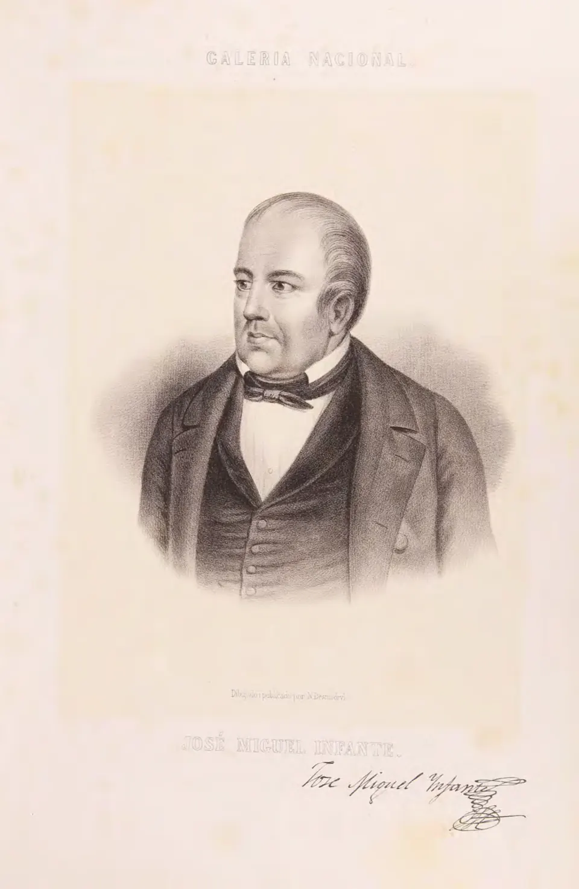

Abolición de la esclavitud

Desde el siglo XVI llegaron a Chile africanos esclavizados, traídos principalmente a través del Perú y de Buenos Aires. Trabajaron en el servicio doméstico, la artesanía, las haciendas y las minas, y con el tiempo se mezclaron con la población criolla, indígena y mestiza. Aunque su número fue menor que en otras regiones de América, su presencia fue importante en ciudades como Santiago.
El primer Congreso Nacional aprobó en 1811 la libertad de vientres, propuesta por Manuel de Salas, que declaró libres a los hijos de esclavizados nacidos en Chile. En 1823, durante el gobierno de Ramón Freire, José Miguel Infante propuso la abolición total, aprobada el 24 de julio de ese año; las constituciones posteriores la consagraron. Chile se convirtió así en uno de los primeros países del continente en abolir la esclavitud. La medida liberó a quienes aún permanecían esclavizados, aunque muchos siguieron viviendo en la pobreza y la dependencia. Los historiadores destacan su valor simbólico y, a la vez, advierten que la presencia afrodescendiente fue invisibilizada durante mucho tiempo en la historia nacional. En 2019, la Ley 21.151 reconoció al pueblo tribal afrodescendiente chileno.
Versión para niños
Durante la Colonia, en Chile hubo personas esclavizadas: hombres, mujeres y niños de origen africano a quienes se obligaba a trabajar sin poder decidir sobre su propia vida. En 1811 se decidió que los hijos de personas esclavizadas nacerían libres. Y el 24 de julio de 1823, gracias a una propuesta de José Miguel Infante, se abolió por completo la esclavitud. Desde entonces, en Chile ninguna persona puede ser propiedad de otra.
Para maestros
Nivel sugerido: 6° básico
Objetivo: Reconocer la abolición de la esclavitud como un avance en derechos y visibilizar la presencia afrodescendiente en la historia de Chile.
Preguntas para la clase:
- ¿Por qué primero se dictó la libertad de vientres (1811) y después la abolición total (1823)?
- ¿Qué cambió y qué no cambió en la vida de las personas liberadas?
- ¿Por qué durante mucho tiempo se habló poco de los afrodescendientes en la historia de Chile?
Actividad (20–30 min): Los estudiantes elaboran una línea de tiempo con tres hitos: 1811 (libertad de vientres), 1823 (abolición) y 2019 (reconocimiento del pueblo tribal afrodescendiente chileno). En grupos, reflexionan sobre qué derechos humanos se relacionan con cada hito.
Fuentes sugeridas: Memoria Chilena; Biblioteca del Congreso Nacional (BCN); Biblioteca Nacional Digital; Museo Histórico Nacional.
Objetivos de Aprendizaje (Currículum Nacional)
- 6° básico · HI06 OA 03 Describir algunos hitos y procesos de la organización de la república … los desafíos que implicó organizar en Chile una nueva forma de gobierno
- 8° básico · HI08 OA 11 Analizar el proceso de formación de la sociedad colonial americana considerando elementos como la evangelización, la esclavitud
- 1° medio · HI1M OA 01 Explicar las ideas republicanas y liberales y su relación con las transformaciones políticas y económicas de América y de Europa … el movimiento abolicionista
Personajes
Revisión humana pendiente. Cómo se revisa · Reportar un error
Cómo citar: Historia de Chile. (2026). Abolición de la esclavitud. En Historia de Chile: atlas y línea de tiempo. https://moises-salgado.github.io/historia-de-chile/momento/abolicion-de-la-esclavitud.html